$$$\require{cancel}$$$
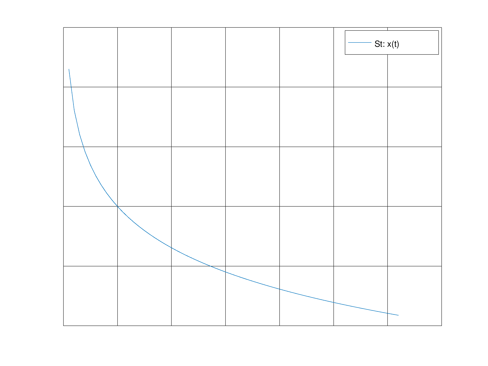 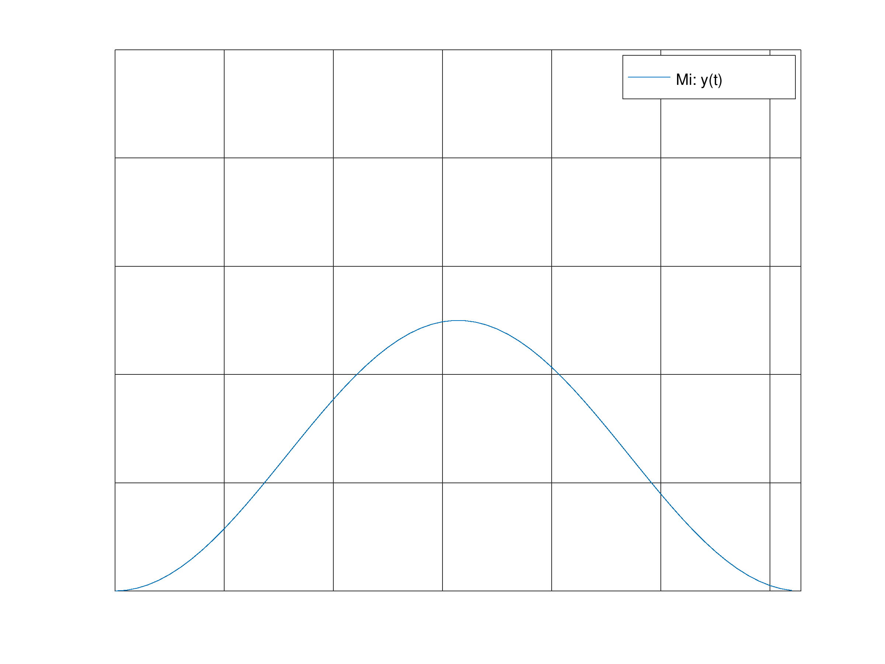 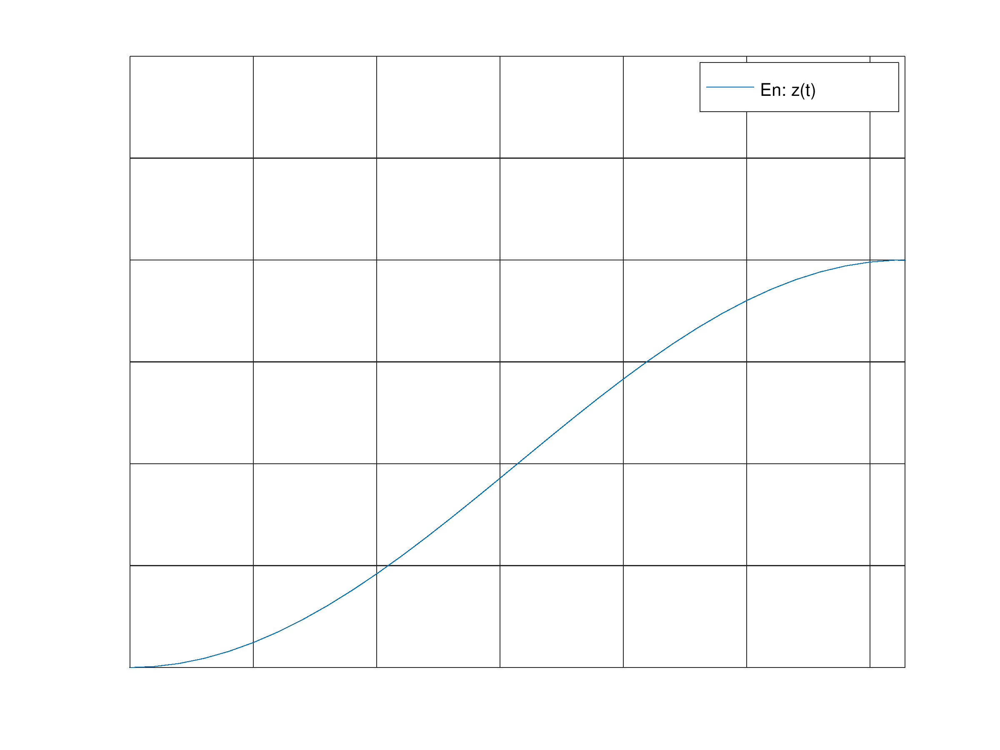
The limiting values as $$$t\rightarrow\infty$$$ should be: $$\begin{align} x(\infty)&\rightarrow0 \\ y(\infty)&\rightarrow0 \\ z(\infty)&\rightarrow x(t_0) \end{align}$$
$$ \begin{align} {dx\over dt} &= -{1\over 2t_s}x(t)\\ {dx\over dt} &= -\sigma x(t),\ \sigma = {1\over 2t_s} \\ \\ {dy\over dt} &= -{1\over 2}{dx\over dt} - {1\over 2t_M}y(t) \\ {dy\over dt} &= {1\over 2}\sigma x(t) - \mu y(t),\ \mu = {1\over 2t_M} \\ \\ {dz\over dt} &= {1\over 2}\sigma x(t) + \mu y(t) \end{align} $$
Solving for $$$x(t)$$$:
$$ \begin{align} {dx\over dt} &= -\sigma x(t) \\ \int {1\over x(t)} dx &= \int -\sigma dt \\ ln(x(t)) &= -\sigma t + C \\ x(t) &= Ce^{-\sigma t} \end{align} $$ Using initial condition x(0) = 1: $$x(0) = Ce^{-\sigma (0)}$$ $$1 = C$$ $$\therefore \bbox[5px, border:2px solid black]{x(t) = e^{-\sigma t}}$$
Solving for $$$y(t)$$$:
$$ \begin{align} {dy\over dt} &= -{1\over 2}\sigma x(t) - \mu y(t) \\ {dy\over dt} &= -{1\over 2}\sigma e^{-\sigma t} - \mu y(t) \end{align} $$ Using the method of integrating factors: $$ \begin{align} {dy\over dt} + \mu y(t) &= -{1\over 2}\sigma e^{-\sigma t} \\ {dy\over dt}e^{\mu t} + \mu y(t) e^{\mu t} &= -{1\over 2}\sigma e^{-\sigma t}e^{\mu t} \\ {dy\over dt}\left(e^{\mu t}y(t)\right) &= -{1\over 2}\sigma e^{t(\mu-\sigma)} \\ \int {d\over dt} \left(e^{\mu t}y(t)\right)\ dt &= \int -{1\over 2}\sigma e^{t(\mu - \sigma)} \ dt \\ e^{\mu t}y(t) &= {-{1\over 2}\sigma \over \mu - \sigma}e^{t(\mu-\sigma)} + C\\ y(t) &= -{\sigma \over 2\left(\mu - \sigma\right)}e^{t(\mu-\sigma)}e^{-\mu t} + C(e^{-\mu t}) \\ y(t) &= -{\sigma \over 2\left(\mu - \sigma\right)}e^{-\sigma t} + Ce^{-\mu t} \end{align} $$ Using the initial condition y(0) = 0: $$y(0) = -{\sigma \over 2\left(\mu -\sigma\right)}e^{0(-\sigma)} + Ce^{-\mu 0}$$ $$0 = -{\sigma \over 2\left(\mu - \sigma\right)} + C$$ $${\sigma \over 2\left(\mu - \sigma\right)} = C$$ $$ \begin{align} y(t) &= -{\sigma \over 2\left(\mu - \sigma\right)}e^{-\sigma t} + Ce^{-\mu t} \\ y(t) &= -{\sigma \over 2\left(\mu - \sigma\right)}e^{-\sigma t} + {\sigma \over 2\left(\mu - \sigma\right)}e^{-\mu t} \end{align} $$ $$\therefore \bbox[5px, border:2px solid black]{y(t) = {\sigma \over 2\left(\mu - \sigma\right)}\left(e^{-\mu t} - e^{-\sigma t}\right)}$$
Solving for $$$z(t)$$$: $$ \begin{align} {dz\over dt} &= {1\over 2}\sigma x(t) + \mu y(t) \\ {dz\over dt} &= {1\over 2}\sigma e^{-\sigma t} + \mu {\sigma \over 2\left(\mu - \sigma\right)}\left(e^{-\mu t} - e^{-\sigma t}\right) \\ {dz\over dt} &= {1\over 2}\sigma e^{-\sigma t} + \mu {\sigma \over 2\left(\mu - \sigma\right)}e^{-\mu t} - \mu {\sigma \over 2\left(\mu - \sigma\right)}e^{-\sigma t} \\ {dz\over dt} &= \sigma \left({1\over 2} - {\mu \over 2\left(\mu - \sigma\right)}\right)e^{-\sigma t}+ \mu {\sigma \over 2\left(\mu - \sigma\right)}e^{-\mu t}\\ \int\ dz &= \int \sigma \left({1\over 2} - {\mu \over 2\left(\mu - \sigma\right)}\right)e^{-\sigma t}+ \mu {\sigma \over 2\left(\mu - \sigma\right)}e^{-\mu t}\ dt \\ z(t) &= \sigma \left({1\over 2} - {\mu \over 2\left(\mu - \sigma\right)}\right){1\over -\sigma}e^{-\sigma t} + \mu {\sigma \over 2\left(\mu - \sigma\right)}{1\over -\mu}e^{-\mu t} + C\\ z(t) &= -\left({1\over 2} - {\mu \over 2\left(\mu - \sigma\right)}\right)e^{-\sigma t} -{\sigma \over 2\left(\mu - \sigma\right)}e^{-\mu t} + C \\ \end{align} $$ Using the initial condition z(0) = 0: $$ \begin{align} z(0) &= -\left({1\over 2} - {\mu \over 2\left(\mu - \sigma\right)}\right)e^{-\sigma 0} -{\sigma \over 2\left(\mu - \sigma\right)}e^{-\mu 0} + C \\ 0 &= -\left({1\over 2} - {\mu \over 2\left(\mu - \sigma\right)}\right) -{\sigma \over 2\left(\mu - \sigma\right)} + C \\ C&=\left({1\over 2} - {\mu \over 2\left(\mu - \sigma\right)}\right) + {\sigma \over 2\left(\mu - \sigma\right)} \\ C&={1\over 2} + {\sigma - \mu \over 2\left(\mu - \sigma\right)} \\ C&={1\over 2} + {-(\mu-\sigma) \over 2\left(\mu - \sigma\right)} \\ C&={1\over 2} + {-1 \over 2} \\ C&=0 \end{align} $$ $$\therefore \bbox[5px, border:2px solid black]{z(t) = -\left({1\over 2} - {\mu \over 2\left(\mu - \sigma\right)}\right)e^{-\sigma t} -{\sigma \over 2\left(\mu - \sigma\right)}e^{-\mu t}}$$
$$ \begin{align} {d\over dt}y(t) = 0 \\ {1\over 2}\sigma x(t) - \mu y(t) &= 0 \\ {1\over 2}\sigma x(t) &= \mu y(t) \\ {1\over 2}\sigma\left(e^{-\sigma t}\right) &= \mu \left({\sigma \over 2\left(\mu - \sigma\right)}\left(e^{-\mu t} - e^{-\sigma t}\right)\right) \\ e^{-\sigma t} &= \left({\mu \over \mu - \sigma}\left(e^{-\mu t} - e^{-\sigma t}\right)\right) \\ e^{-\sigma t} &= {\mu \over \mu - \sigma}e^{-\mu t} - {\mu \over \mu - \sigma}e^{-\sigma t} \\ e^{-\sigma t} + {\mu \over \mu - \sigma}e^{-\sigma t} &= {\mu \over \mu - \sigma}e^{-\mu t} \\ e^{-\sigma t}\left(1+ {\mu \over \mu - \sigma}\right) &= {\mu \over \mu - \sigma}e^{-\mu t} \\ e^{t(\mu-\sigma)}\left(1+ {\mu \over \mu - \sigma}\right) &= {\mu \over \mu - \sigma}\\ e^{t(\mu-\sigma)} &= {{\mu \over \mu - \sigma} \over 1+ {\mu \over \mu - \sigma}}\\ e^{t(\mu-\sigma)} &= {\mu \over 2\mu - \sigma}\\ e^{t} &= {\mu \over 2\mu - \sigma}e^{-(\mu-\sigma)}\\ t &= ln\left({\mu \over 2\mu - \sigma}e^{-(\mu-\sigma)}\right)\\ t &= \bbox[5px, border:2px solid black]{ln(\mu) - ln(2\mu-\sigma) + ln(\sigma - \mu)} \end{align} $$
Analytically, with $$$x(0) = 2$$$:
For x(t):
$$x(0) = Ce^{-\sigma (0)}$$
$$2 = C$$
$$ \bbox[5px, border:2px solid black]{x(t) = 2e^{-\sigma t}}$$
For y(t): $$ \bbox[5px, border:2px solid black]{y(t) = {\sigma \over \mu - \sigma}\left(e^{-\mu t} - e^{-\sigma t}\right)}$$
For z(t): $$ \bbox[5px, border:2px solid black]{z(t) = -\left(1 - {\mu \over \mu - \sigma}\right)e^{-\sigma t} -{\sigma \over \mu - \sigma}e^{-\mu t}}$$
It appears as if doubling $$$x(0)$$$ doubles the values of $$$x(t)$$$, $$$y(t)$$$, and $$$z(t)$$$.
$$t{dx(t)\over dt} + 2x(t) = q(t)$$
Given the particular solution: $$x(t) = e^t$$
We can write: $${dx(t)\over dt} = te^t$$ $$t(te^t) + 2e^t = q(t)$$ $$\therefore \bbox[5px, border:2px solid black]{q(t) = e^t(t^2+2)}$$
To find the general solution we can write: $$x_p + Cx_h$$
Where $$$x_p$$$ denotes the particular solution (e.g. $$$x(t) = e^t$$$ and $$$x_h$$$ denotes the homogeneous solution (e.g. the solution when $$$q(t) = 0$$$.
Finding the homogeneous solution:
$$
\begin{align}
t{dx_h(t)\over dt} + 2x(t) &= 0 \\
{dx_h(t)\over dt} &= -{2\over t}x(t) \\
\int {1\over x_h(t)}\ dx(t) &= \int -{2\over t}\ dt \\
ln(x(t)) &= -2ln(t) + C \\
x_h(t) = Ce^{ln(1\over t^2)} \\
x_h(t) = C{1\over t^2}
\end{align}
$$
Substituting the particular solution and homogeneous solutions in: $$\bbox[5px, border:2px solid black]{e^t + {C\over t^2}}$$
| n | $$$a+bi$$$ | $$$|z|$$$ | $$$arg(z)$$$ | img |
|---|---|---|---|---|
| i | $$$i-1$$$ | $$$\sqrt2$$$ | $$${-\pi\over4}$$$ | 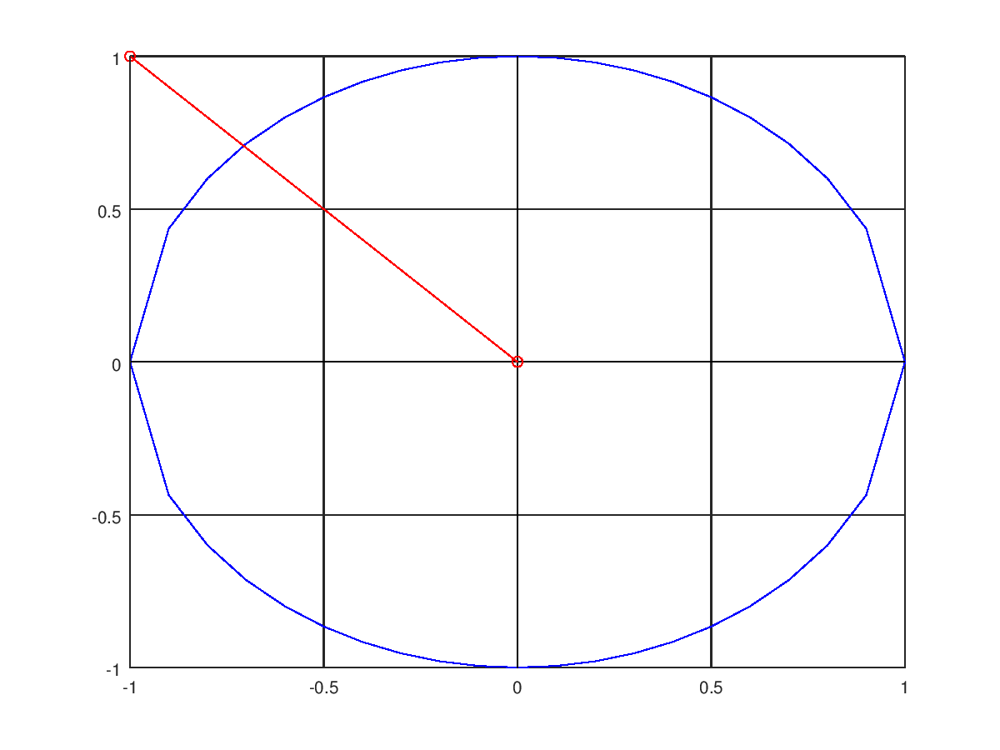 |
| ii | $$$\sqrt3+i$$$ | $$$2$$$ | $$${\pi\over6}$$$ | 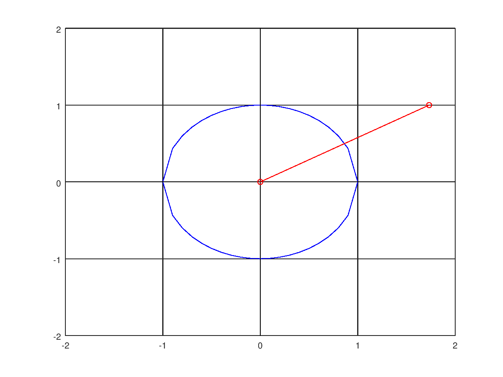 |
| iii | $$$-{\sqrt2\over2}-{\sqrt2\over2}i$$$ | 1 | $$${5\pi\over4}$$$ | 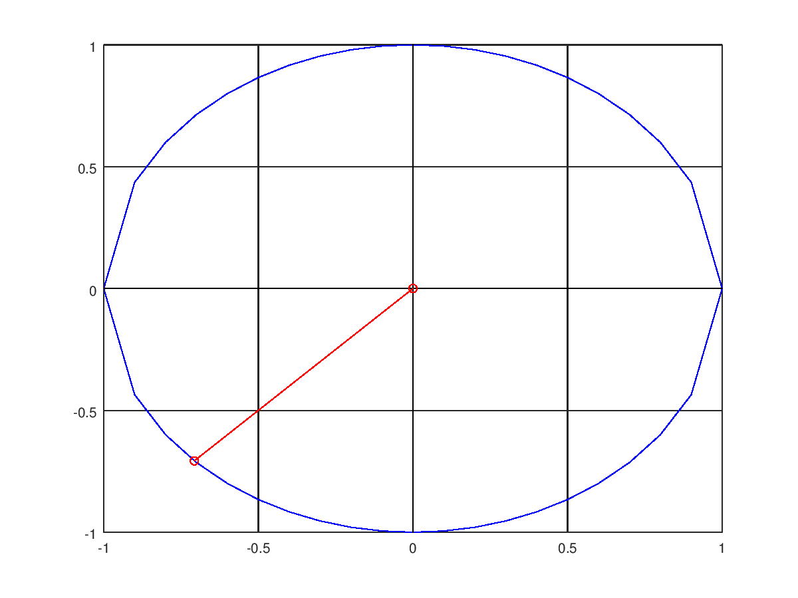 |
| iv | $$${1\over2} + {\sqrt3\over2}i$$$ | 1 | $$${\pi\over3}$$$ | 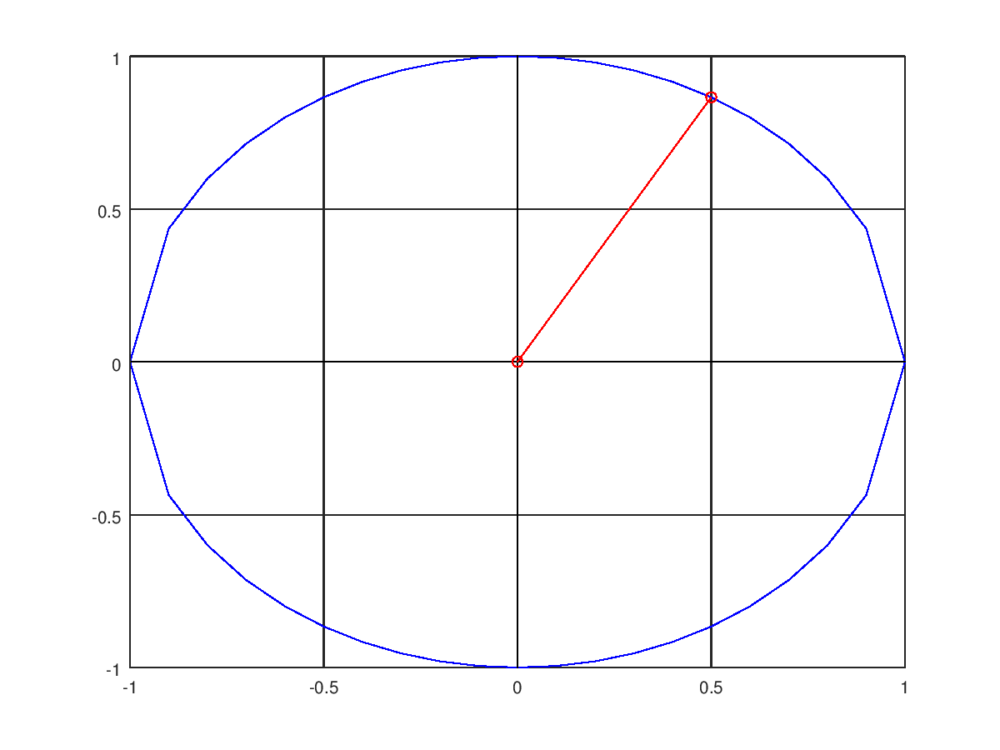 |
| v | $$$0.9982+0.0604i$$$ | 1 | $$${\pi\over52}$$$ | 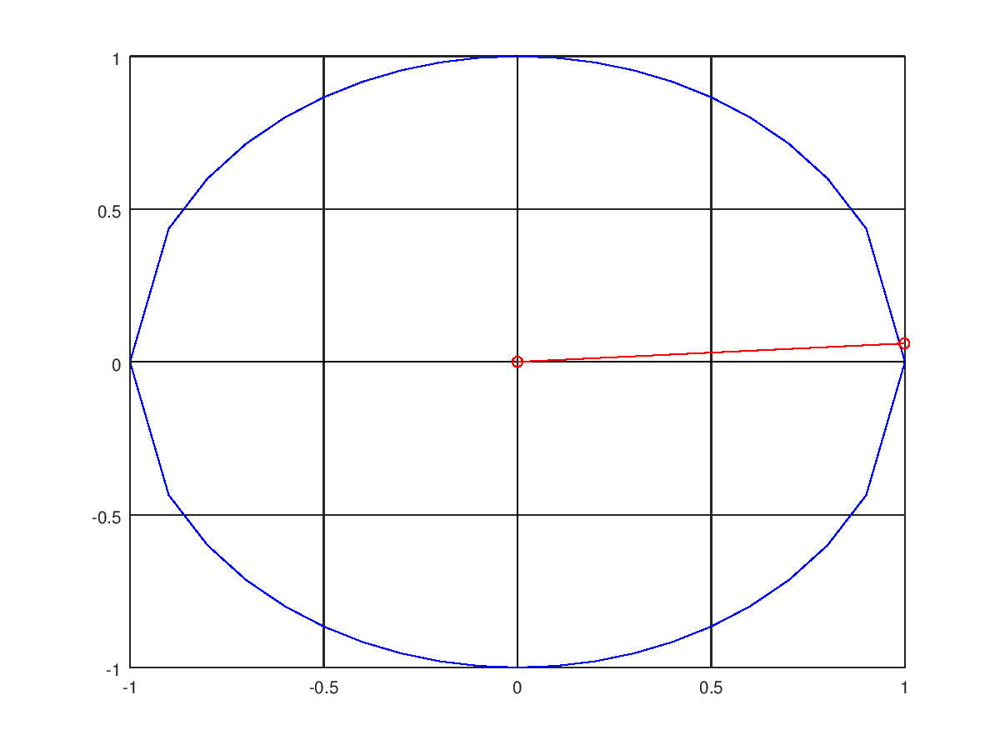 |
$$ \begin{align} z^4 + 4 &= 0 \\ z^4 &= -4 \\ z^4 &= 4e^{\pi i} \\ z &= 4^{1\over 4}e^{{\pi\over4}i} \\ z &= \bbox[5px, border:2px solid black]{\sqrt2e^{{\pi\over4}+{\pi k\over2}},\ k={0,1,2,3}}\\ \end{align} $$
For $$z^2+2z+2 = 0 $$ Apply quadratic formula: $$-2\pm\sqrt{2^2-4(1)(2)}\over 2$$ $$-2\pm\sqrt{-4}\over 2$$ $$-1\pm i$$ $$\therefore z=\bbox[5px, border:2px solid black]{-1+i,\ -1-i}$$
| n | $$$Ae^{i\theta}$$$ |
|---|---|
| i | $$$\sqrt2e^{{-\pi\over4}i}$$$ |
| ii | $$$2e^{{\pi\over6}i}$$$ |
| iii | $$$e^{{5\pi\over4}i}$$$ |
| iv | $$$e^{{\pi\over3}i}$$$ |
| v | $$$e^{{\pi\over52}i}$$$ |
$$ \begin{align} e^{z} &= -2 \\ e^{a+bi} &= e^{a}\left(\cos(b)+i\sin(b)\right)\\ -2 &= e^{a}\left(\cos(b)+i\sin(b)\right)\\ \end{align} $$ $$\therefore \bbox[5px, border:2px solid black]{z=ln(-2) + 0i,\ z=ln(2) + \pi i}$$
$$ \begin{align} cos(4t) &= Re\left\{e^{4it}\right\} \\ Re\left\{e^{4it}\right\} &= Re\left\{\left(e^{it}\right)^4\right\} \\ Re\left\{\left(e^{it}\right)^4\right\} &= Re\left\{\left(cos(t) + i sin(t)\right)^4\right\} \\ Re\left\{\left(cos(t) + i sin(t)\right)^4\right\} &= \cos^4t+\cancel{4\cos^3t\cdot i\sin t}+6\cos^2t\cdot i^2\sin^2t+\cancel{4\cos t\cdot i^3\sin^3t}+i^4\sin^4t \\ &= \cos^4t - 6\cos^2t\cdot\sin^2t + sin^4t \\ \end{align} $$ $$\therefore \cos(4t) = \bbox[5px, border:2px solid black]{\cos^4t - 6\cos^2t\cdot\sin^2t + \sin^4t}$$
$$f(t) = \cos(2\pi t)$$ $$f(t) = Re\left\{e^{2\pi it}\right\}$$ 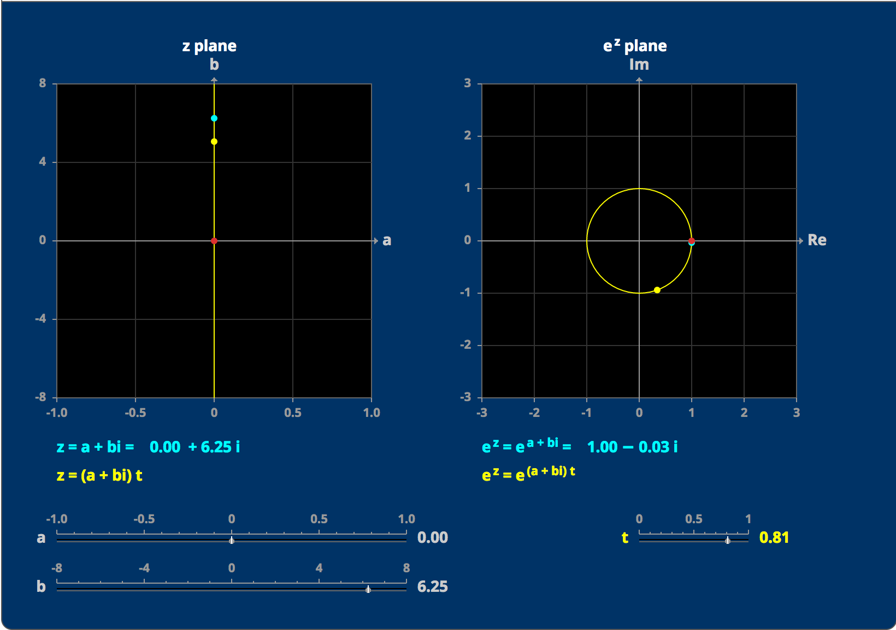
$$f(t) = e^{-t}$$ $$f(t) = e^{\left(-1+0i\right)t}$$ 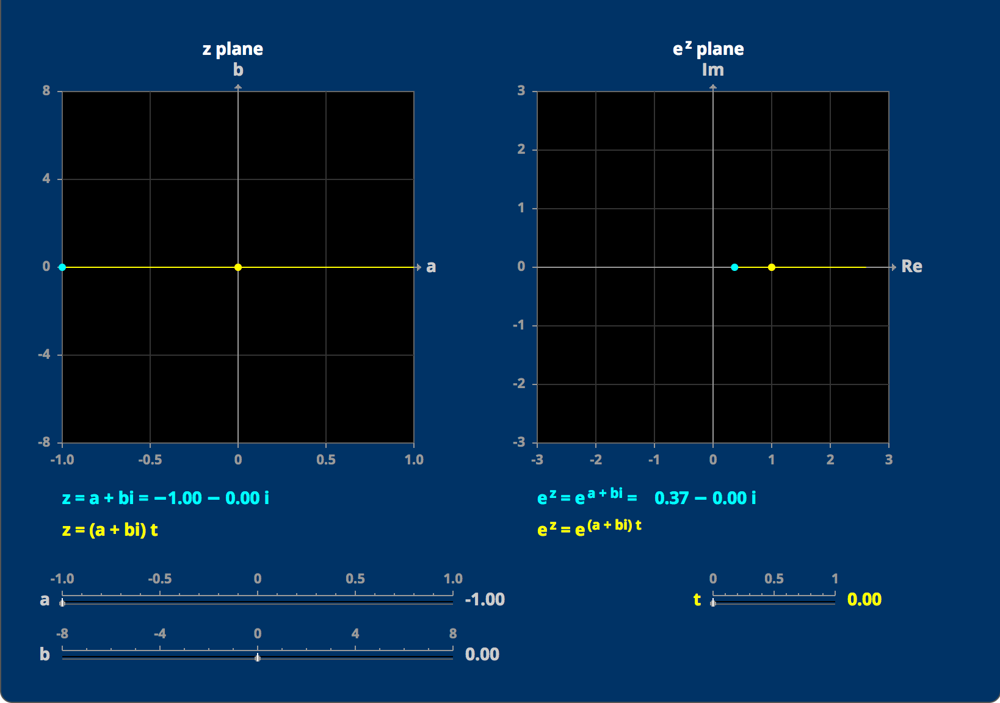
$$f(t) = e^{-t}cos(2\pi t)$$ $$f(t) = e^{\left(-1+2\pi i\right)t}$$ 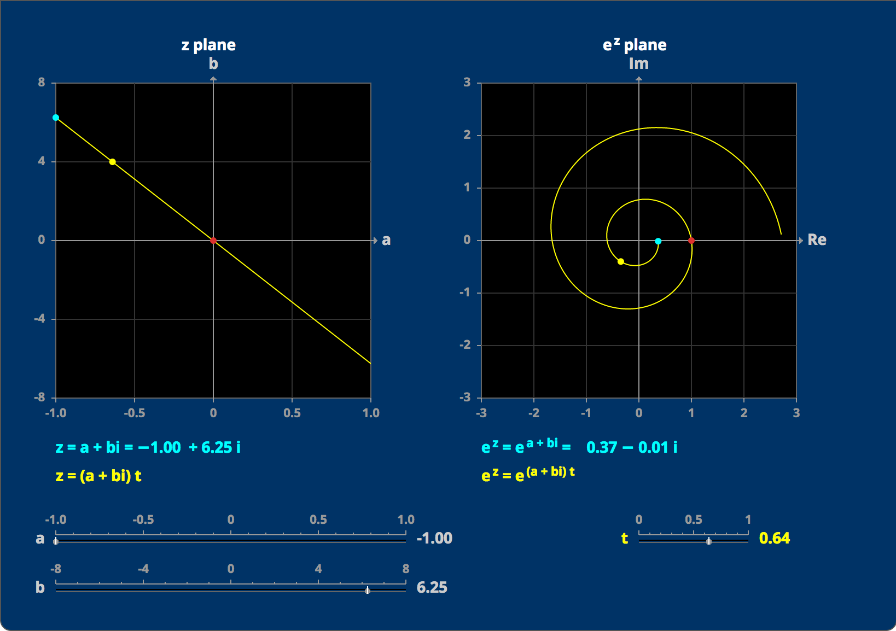
$$f(t) = 1$$ $$f(t) = e^{\left(0+0i\right)t}$$ 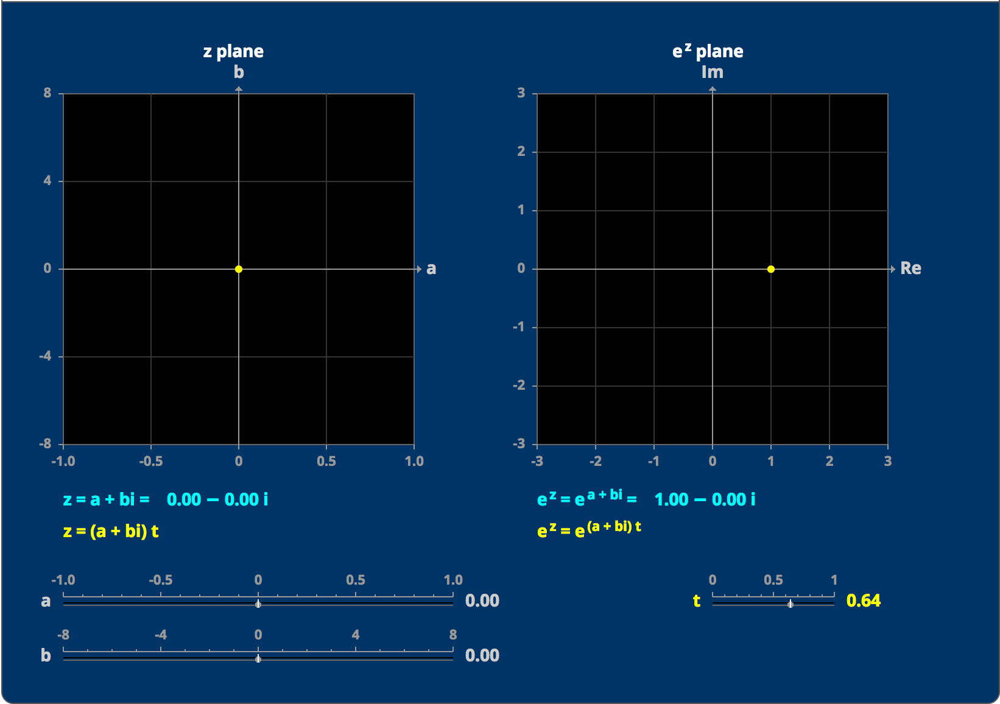
First way:
$$
\begin{align}
Re\left\{e^{3it}\over\sqrt3+i\right\} &= Re\left\{{\sqrt3-i\over 4}\left(\cos(3t) + i\sin(3t)\right)\right\} \\
&= {\sqrt3\over 4}\cos(3t) + {1\over 4}\sin(3t) \\
&= {1\over 2}\cos\left(3t-{\pi\over6}\right)
\end{align}
$$
Other way:
$$
\begin{align}
e^{3it}\over\sqrt3 + i &= Be^{i(3t-\phi)} \\
e^{3it}\over 2e^{\pi i\over6} &= {1\over2}e^{i(3t-{\pi\over6})}\\
\end{align}
$$
$$
Re\left\{{1\over2}e^{i(3t-{\pi\over6})}\right\} = {1\over 2} cos\left(3t-{\pi\over6}\right)
$$
$$
\therefore \bbox[5px, border:2px solid black]{{1\over 2} cos\left(3t-{\pi\over6}\right) = {1\over 2} cos\left(3t-{\pi\over6}\right)} \quad\checkmark
$$
Particular solution: $$ \begin{align} {d\over dt}z(t) + 3z(t) &= e^{2it} \\ {d\over dt}\omega e^{2it} + 3\omega e^{2it} &= e^{2it} \\ 2i\omega e^{2it} + 3\omega e^{2it} &= e^{2it}\\ \omega(3+2i)e^{2it} &= e^{2it}\\ \omega(3+2i) &= 1 \\ \omega &= {1\over 3+2i} \end {align} $$ $$ \bbox[5px, border:2px solid black]{{1\over 3+2i}e^{2it}} $$ Homogeneous solution: $$ \begin{align} {d\over dt}z(t) + 3z(t) &= 0\\ {d\over dt}z(t) &= -3z(t)\\ \int {1\over z(t)} dz(t) &= \int -3 dt\\ ln(z(t)) &= -3t + C \\ z(t) &= Ce^{-3t}\\ \end{align} $$ $$ \bbox[5px, border:2px solid black]{e^{-3t}} $$ General solution: $$ \bbox[5px, border:2px solid black]{{1\over 3 + 2i}e^{2it} + Ce^{-3t}} $$
$${d\over dt}x(t) + 3x(t) = cos(2t)$$ Knowing the equation from (b) and realizing that $$$cos(2t) = Re\left\{e^{2it}\right\}$$$: $$ \begin{align} Re\left\{{1\over 3+2i}e^{2it}\right\} &= Re\left\{{3-2i\over(3+2i)(3-2i)}e^{2it}\right\}\\ &= Re\left\{{3-2i\over13}\left(\cos(2t) + i\sin(2t)\right)\right\}\\ &={1\over 13}\left(3\cos(2t) + 2\sin(2t)\right)\\ \end{align} $$ $$ \therefore x(t) = \bbox[5px, border:2px solid black]{{1\over 13}\left(3\cos(2t) + 2\sin(2t)\right)} $$
The general solution follows the solution found in (b): $$ \bbox[5px, border:2px solid black]{{1\over 13}\left(3\cos(2t) + 2\sin(2t)\right) + ce^{-3t}} $$
$${dy\over dx} + y(x) = 2,\ y(0) = 0$$ This is actually separable, and can be solved with: $${dy\over dx} = 2-y(x)$$ $$\int {1\over 2 - y(x)}\ dy = \int dx$$ $$ln(2-y(x)) = t + C$$ $$2 - y(x) = e^{t+C_0}$$ $$y(x) = Ce^{x}-2$$ Using the initial condition $$$y(0) = 0$$$: $$y(0) = Ce^{0}-2$$ $$0 = C - 2$$ $$C=2$$ $$\bbox[5px, border:2px solid black]{y(x) = 2e^{x}-2}$$
$${dy\over dx}-2y(x)=3e^{2x}$$ This is unseparable. Proceed by method of integrating factors. $${d\over dx}a(x) = -2a(x)$$ Separate variables: $$\int {1\over a(x)} da(x) = \int -2\ dx$$ $$ln(a(x)) = -2x + C_0$$ $$a(x) = Ce^{-2x}$$ Multiplying this back into the original equation: $${dy\over dx}e^{-2x} - 2y(x)e^{-2x} = 3e^{2x}e^{-2x}$$ $${d\over dx}\left(y(x)e^{-2x}\right)=3$$ $$\int{d\over dx}\left(y(x)e^{-2x}\right)\ dx = \int 3 \ dx$$ $$y(x)e^{-2x} = 3x$$ $$\bbox[5px, border:2px solid black]{y(x) = 3xe^{2x}}$$
$$x{dy\over dx} + 2y(x) = 3x, y(1) = 5$$ $${dy\over dx} + {2\over x}y(x) = 3$$ This equation is not separable. We can write this in standard form though, so proceed by method of integrating factors. $${2\over x}a(x) = {da(x)\over dx}$$ Separate variables: $$\int {1\over a(x)}\ da(x) = \int {2\over x}\ dx$$ $$ln(a(x)) = 2ln(x) + C$$ $$a(x) = e^{2ln(x)+C}$$ $$a(x) = Cx^2$$ Substitute back into the original equation: $${dy\over dx}x^2 + {2\over x}y(x)x^2 = 3x^2$$ $${dy\over dx}x^2 + 2xy(x) = 3x^2$$ $${d\over dx}\left(y(x)x^2\right) = 3x^2$$ $$\int {d\over dx}\left(y(x)x^2\right)\ dx = \int 3x^2\ dx$$ $$y(x)x^2 = x^3 + C$$ $$y(x) = {x^3 + C \over x^2}$$ $$y(x) = x + Cx^{-2}$$ Using the initial condition of $$$y(1)=5$$$: $$y(1) = (1) + C(1)^{-2}$$ $$5 = 1 + C$$ $$C = 4$$ $$\bbox[5px, border:2px solid black]{\therefore y(x) = x + 4x^{-2}}$$
$$-1 + i$$ $$\begin{split}r=\sqrt{(-1)^2 + 1^2}\end{split},\quad\begin{split}tan(\theta)={1\over-1}\end{split}$$ $$\begin{split}r = \sqrt{2}\end{split} ,\quad\begin{split}\theta=-{\pi\over 4}\end{split}$$ $$\sqrt {2}\left(\cos\left(-{\pi\over4}\right)+i\sin\left(-{\pi\over 4}\right)\right)$$ $$\bbox[5px, border:2px solid black]{\sqrt2e^{{-{\pi\over 4}}i}}$$
$$\sqrt{3} - i$$ $$\begin{split}r=\sqrt{(\sqrt{3})^2 + (-1)^2}\end{split},\quad\begin{split}tan(\theta)={-1\over\sqrt{3}}\end{split}$$ $$\begin{split}r = 2\end{split} ,\quad\begin{split}\theta=-{\pi\over 6}\end{split}$$ $$2\left(\cos\left(-{\pi\over6}\right)+i\sin\left(-{\pi\over 6}\right)\right)$$ $$\bbox[5px, border:2px solid black]{2e^{-{\pi\over 6}i}}$$
$${1-i\over 1+i}$$ Rectangular: $${1-i\over 1+i} = {(1-i)\cdot(1-i)\over (1+i)\cdot(1-i)}$$ $${1-i\over 1+i} = -2i\over 2$$ $$\bbox[5px, border:2px solid black]{{1-i\over 1+i} = -i}$$ Polar: $$1-i \rightarrow \sqrt2 \left(\cos\left(-{\pi\over 4}\right)+i\sin\left(-{\pi\over 4}\right)\right) \rightarrow \sqrt2e^{{-{\pi\over 4}i}}$$ $$1+i \rightarrow \sqrt2 \left(\cos\left({\pi\over 4}\right)+i\sin\left({\pi\over 4}\right)\right)\rightarrow \sqrt2e^{{\pi\over 4}i}$$ $${1-i\over 1+i} = {\cancel{\sqrt2}e^{-{\pi\over 4}i} \over \cancel{\sqrt2}e^{{\pi\over 4}i}}$$ $${1-i\over 1+i} = e^{-{\pi\over 4}i}e^{-{\pi\over 4}i}$$ $${1-i\over 1+i} = e^{-{\pi\over 2}i}$$ $${1-i\over 1+i} = \cos(-{\pi\over2}) + i \sin(-{\pi\over2})$$ $${1-i\over 1+i} = 0 + i (-1)$$ $$\bbox[5px, border:2px solid black]{{1-i\over 1+i} = -i}$$ Comparing the answers from the rectangular method and the polar method we find that they are the same: $$-i=-i\quad\checkmark$$
$$(1-i)^4$$ De Moivre's formula: $$1-i = \sqrt2e^{-{\pi\over4}i}$$ $$(1-i)^4 = \left(\sqrt2e^{-{\pi\over4}i}\right)^4$$ $$(1-i)^4 = 4e^{-\pi i}$$ $$(1-i)^4 = 4\left(\cos(-\pi) + i\sin(-\pi)\right)$$ $$(1-i)^4 = 4(-1+i(0))$$ $$\bbox[5px, border:2px solid black]{(1-i)^4 = -4}$$
Binomial theorem: $$(1-i)^4 = 1\cdot1^4 + 4\cdot1^3(-i)^1 + 6\cdot1^2(-i)^2 + 4\cdot1(-i)^3 + 1\cdot(-i)^4$$ $$(1-i)^4 = 1\cdot1 + 4\cdot(-i) + 6\cdot1(-1) + 4\cdot1(-i) + 1\cdot1$$ $$(1-i)^4 = 1 - 4i - 6 + 4i + 1$$ $$\bbox[5px, border:2px solid black]{(1-i)^4 = -4}$$ Comparing the two solution methods we find that: $$-4 = -4\quad\checkmark$$
$$(1+i\sqrt3)^3$$ De Moivre's formula: $$1+i\sqrt3 = 2e^{{\pi\over 3}i}$$ $$(1+i\sqrt3)^3 = 8e^{{\pi}i}$$ $$(1+i\sqrt3)^3 = 8(\cos(\pi) + i\sin(\pi))$$ $$\bbox[5px, border:2px solid black]{(1+i\sqrt3)^3 = -8}$$
Binomial theorem: $$(1+i\sqrt3)^3 = 1\cdot1^3 + 3\cdot1^2(i\sqrt3) + 3\cdot1(i\sqrt3)^2 + 1\cdot(i\sqrt3)^3$$ $$(1+i\sqrt3)^3 = 1 + \cancel{3i\sqrt3} + 9(-1) - \cancel{3i\sqrt3}$$ $$\bbox[5px, border:2px solid black]{(1+i\sqrt3)^3 = -8}$$
Comparing the two solution methods we find that: $$-8 = -8\quad\checkmark$$
$$1=e^{2\pi i}$$ $$1^{1\over 6} = e^{2\pi i\over 6}$$ We can write down all the roots: $$e^{\pi i\over3}, e^{2\pi i\over3}, e^{\pi i}, e^{4\pi i\over3}, e^{5\pi i\over3}, e^{2\pi i}$$ In a+bi format: $$\bbox[5px, border:2px solid black]{{1\over 2} + {\sqrt3\over2}i,\ -{1\over 2} + {\sqrt3\over2}i,\ -1,\ -{1\over 2} - {\sqrt3\over2},\ i,\ {1\over 2} - {\sqrt3\over2}i,\ 1\ }$$
$$x^4 + 16 = 0$$ $$x^4 = -16$$ $$x^4 = 16(\cos(\pi) + i\sin(\pi))$$ $$x^4 = 16e^{\pi i}$$ $$x = 16^{1\over 4}e^{{\pi\over 4} i}$$ There are four roots: $$x = 2e^{{\pi\over 4}i},\ 2e^{{3\pi\over 4}i},\ 2e^{{5\pi\over 4}i},\ 2e^{{7\pi\over 4}i}$$ Written in the $$$a+bi$$$ format: $$\bbox[5px, border:2px solid black]{x = \sqrt2 + \sqrt2 i,\ -\sqrt2 + \sqrt2 i,\ -\sqrt2 - \sqrt2 i,\ \sqrt2 - \sqrt2 i}$$
$$Acos(\theta) + Bsin(\theta) = Ccos(\theta-\phi), C=\sqrt{A^2+B^2}, \phi=\tan^{-1}\left({B\over A}\right)$$ $$\bbox[5px, border:2px solid black]{\cos(2t) + \sin(2t) = \sqrt2\cos\left(2t-{\pi\over 4}\right)}$$
$$\bbox[5px, border:2px solid black]{\cos(\pi t)-\sqrt3\sin(\pi t) = 2\cos\left(\pi t - {\pi\over 3}\right)}$$
$$\bbox[5px, border:2px solid black]{\cos\left(t-{\pi\over 8}\right) + \sin\left(t-{\pi\over 8}\right) = \sqrt2\cos\left(t-{3\pi\over 8}\right)}$$
$$\int e^{2x}\sin x\ dx = Im\left\{ \int e^{2x}e^{ix} dx\right\}$$ $$ \begin{align} \int e^{2x}e^{ix} dx &= {1 \over (2+i)}e^{x(2+i)} \\ &= {e^{2x}\over (2+i)}e^{ix}\\ &= {e^{2x}(2-i)\over 5}e^{ix}\\ &= {e^{2x}(2-i)\over 5}(\cos\ x + i\sin\ x)\\ \end{align} $$ Note that we want only the imaginary component: $$ \begin{align} Im\left\{ {e^{2x}(2-i)\over 5}(\cos\ x + i\sin\ x) \right\} &= Im\left\{ {2e^{2x}-ie^{2x}\over 5}(\cos\ x + i\sin\ x) \right\} \\ &=Im\left\{i\left({-e^{2x}\cos\ x\over 5} + {2e^{2x}\sin\ x\over 5}\right)\right\} \\ &=\bbox[5px, border:2px solid black]{{-e^{2x}\cos\ x\over 5} + {2e^{2x}\sin\ x\over 5}} \end{align}$$
$${d\over dt}x(t) + 2x(t) = e^{3t}$$ $${d\over dt}x(t)e^{2t} + 2x(t)e^{2t} = e^{3t}e^{2t}$$ $${d\over dt}\left(x(t)e^{2t}\right) = e^{5t}$$ $$\int {d\over dt}\left(x(t)e^{2t}\right) \ dt =\int e^{5t} \ dt$$ $$x(t)e^{2t} = {1\over 5}e^{5t} + C$$ $$\bbox[5px, border:2px solid black]{x(t) = e^{-2t}\left[{1\over 5}e^{5t} + C\right]}$$
$${d\over dt}x(t) + 2x(t) = e^{3it}$$ $${d\over dt}x(t)e^{2t} + 2x(t)e^{2t} = e^{3it}e^{2t}$$ $${d\over dt}\left(x(t)e^{2t}\right) = e^{t(2+3i)}$$ $$\int {d\over dt}\left(x(t)e^{2t}\right)\ dt = \int e^{t(2+3i)}\ dt$$ $$x(t)e^{2t} = {1\over (2+3i)}e^{t(2+3i)} + C$$ $$\bbox[5px, border:2px solid black]{x(t) = e^{-2t}\left[{1\over(2+3i)}e^{t(2+3i)}+C\right]}$$